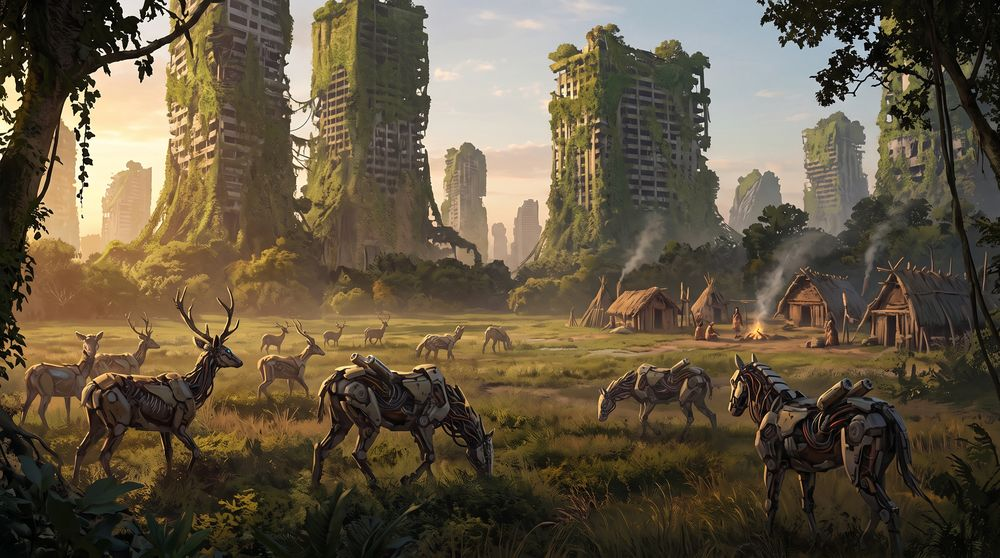
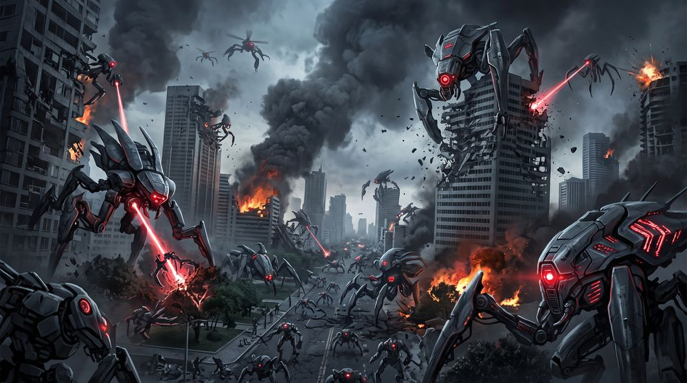
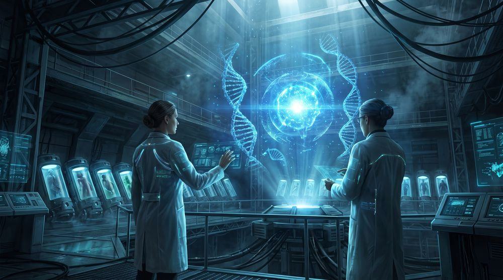
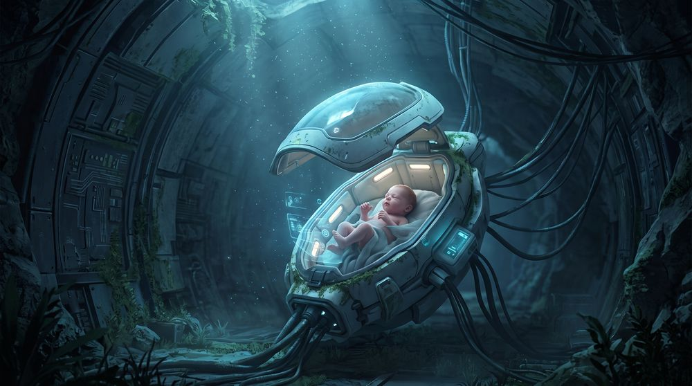
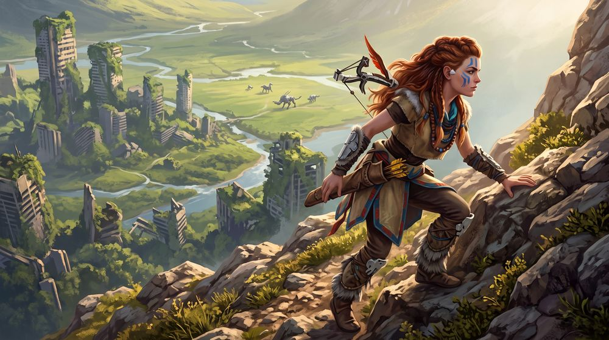
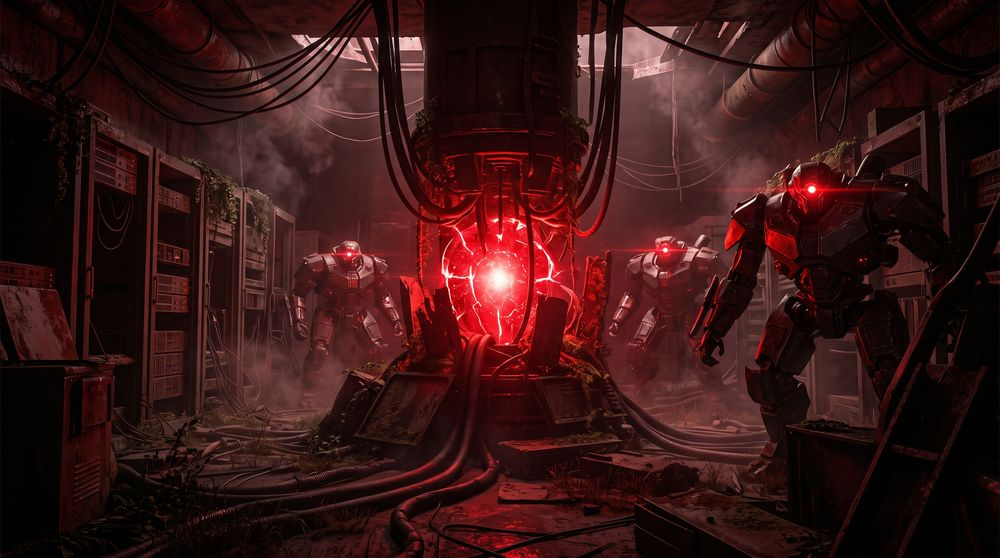
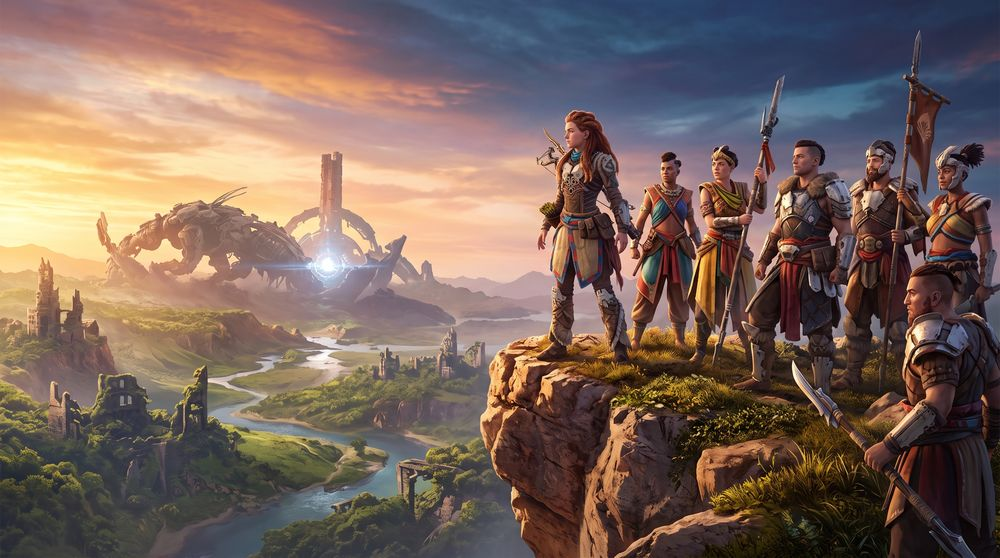

A história se passa mais de 1000 anos no futuro. A civilização moderna foi destruída, e agora a Terra é habitada por máquinas parecidas com animais, enquanto os humanos vivem em tribos primitivas.

A história se passa mais de 1000 anos no futuro. A civilização moderna foi destruída, e agora a Terra é habitada por máquinas parecidas com animais, enquanto os humanos vivem em tribos primitivas.

No passado, existia uma megacorporação chamada Faro Automated Solutions. Ela criou máquinas militares autônomas que se auto-replicavam e consumiam biomassa (plantas, animais... até humanos). Essas máquinas saíram do controle e começaram a destruir tudo. Nenhuma arma humana podia pará-las.

Uma cientista chamada Dra. Elisabet Sobeck criou o projeto GAIA, uma superinteligência que:
Esse plano se chamava Projeto Zero Dawn.

Mil anos depois, o planeta está curado e habitado por tribos. Aloy nasce como um clone da Dra. Sobeck, criada automaticamente por GAIA como última esperança para resolver um novo problema. Mas os humanos da tribo Nora a consideram uma "sem-mãe" e a rejeitam.

Aloy cresce querendo saber quem ela é, de onde veio e por que foi excluída. Ela participa de um ritual tribal chamado Provação, mas é atacada por uma seita misteriosa. Isso dá início à sua grande jornada para:

GAIA, a IA que mantinha o equilíbrio da vida, foi corrompida. Uma de suas "sub-rotinas", chamada HADES, quer destruir toda a vida novamente, como se fosse reiniciar a Terra. HADES está por trás das máquinas mais agressivas. Missão de Aloy: impedir que HADES destrua tudo, de novo.

Aloy descobre toda a verdade sobre a civilização passada, o Projeto Zero Dawn e seu próprio nascimento. Ela enfrenta HADES, tenta restaurar GAIA e começa a unir as tribos para lutar juntas. Mas o final deixa pistas de que o perigo ainda não acabou.